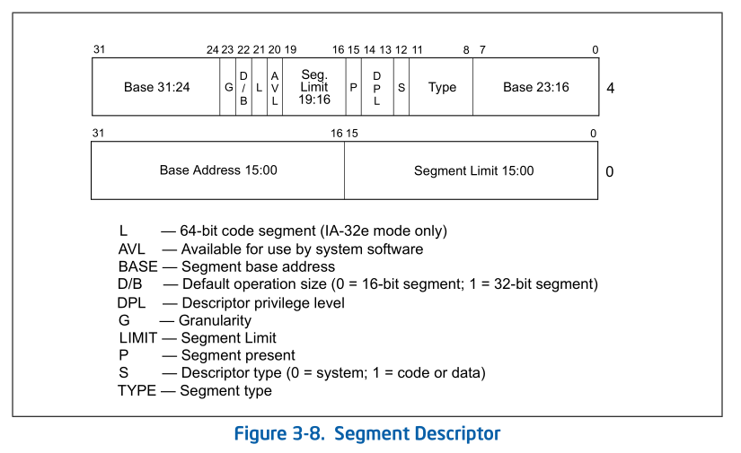

Tsinghua操作系统课程
不可视境界线最后变动于：几秒前
Lab1
知识点
1.BIOS启动顺序
- CPU加电后代码段寄存器初始化为CS = F000H, EIP = 0000FFF0H, 然后再计算 Base+IP = FFFF0000H + 0000FFF0H = FFFFFFF0H 得到BIOS的EPROM(Erasable Programmable Read Only Memory)所在地, 这个地址的第一条指令是一个长跳转指令(这样CS和EIP都会更新)到BIOS代码中执行
- BIOS做完计算机硬件自检和初始化后，会选择一个启动设备（例如软盘、硬盘、光盘等），并且读取该设备的第一扇区(即主引导扇区或启动扇区)到内存一个特定的地址0x7c00处，然后CPU控制权会转移到那个地址继续执行。至此BIOS的初始化工作做完了，进一步的工作交给了ucore的bootloader。
附:
- 在16位的8086 CPU时代，内存限制在1MB范围内，且BIOS的代码固化在EPROM中。在基于Intel的8086 CPU的PC机中的EPROM被编址在1ＭB内存地址空间的最高64KB中。PC加电后，CS寄存器初始化为0xF000，IP寄存器初始化为0xFFF0, CS:IP=0xF000:0XFFF0（Segment:Offset 表示）=0xFFFF0(Linear表示)
- 默认将执行BIOS ROM编址在32位内存地址空间的最高端，即位于4GB地址的最后一个64KB内。在PC系统开机复位时，CPU进入实模式，并将CS寄存器设置成0xF000，将它的shadow register的Base值初始化设置为0xFFFF0000，EIP寄存器初始化设置为0x0000FFF0。所以机器执行的第一条指令的物理地址是0xFFFFFFF0。80386的BIOS代码也要和以前8086的BIOS代码兼容，故地址0xFFFFFFF0处的指令还是一条长跳转指令
jmp F000:E05B。注意，这个长跳转指令会触发更新CS寄存器和它的shadow register，即执行jmp F000 : E05B后，CS将被更新成0xF000。表面上看CS其实没有变化，但CS的shadow register被更新为另外一个值了，它的Base域被更新成0x000F0000，此时形成的物理地址为Base+EIP=0x000FE05B，这就是CPU执行的第二条指令的地址。此时这条指令的地址已经是1M以内了，且此地址不再位于BIOS ROM中，而是位于RAM空间中。由于Intel设计了一种映射机制，将内存高端的BIOS ROM映射到1MB以内的RAM空间里，并且可以使这一段被映射的RAM空间具有与ROM类似的只读属性。所以PC机启动时将开启这种映射机制，让4GB地址空间的最高一个64KB的内容等同于1MB地址空间的最高一个64K的内容，从而使得执行了长跳转指令后，其实是回到了早期的8086 CPU初始化控制流，保证了向下兼容
例图:


2.实模式
参考资料:《Intel 80386 Reference Programmers Manual-i386》, 基本是这个的翻译
在bootloader接手BIOS的工作后，当前的PC系统处于实模式（16位模式）运行状态，在这种状态下软件可访问的物理内存空间不能超过1MB，且无法发挥Intel 80386以上级别的32位CPU的4GB内存管理能力。
实模式将整个物理内存看成分段的区域，程序代码和数据位于不同区域，操作系统和用户程序并没有区别对待，而且每一个指针都是指向实际的物理地址。这样，用户程序的一个指针如果指向了操作系统区域或其他用户程序区域，并修改了内容，那么其后果就很可能是灾难性的。通过修改A20地址线可以完成从实模式到保护模式的转换。有关A20的进一步信息可参考“关于A20 Gate”。

- 地址
0-0x9ffff的640KB内存是DRAM，即插在主板上的内存条。
顶部0xf0000-0xfffff的64KB内存是ROM，存放BIOS代码。 - EPROM是通过地址来访问的, 80386将其映射到内存的顶端, 其他的一些外设也同样通过映射到地址空间来访问它们
3.分段机制/保护模式
a.保护模式
只有在保护模式下，80386的全部32根地址线有效，可寻址高达4G字节的线性地址空间和物理地址空间，可访问64TB（有2^14^个段，每个段最大空间为2^32^字节）的逻辑地址空间，可采用分段存储管理机制和分页存储管理机制。这不仅为存储共享和保护提供了硬件支持，而且为实现虚拟存储提供了硬件支持。通过提供4个特权级和完善的特权检查机制，既能实现资源共享又能保证代码数据的安全及任务的隔离。
【补充】保护模式下，有两个段表：GDT（Global Descriptor Table）和LDT（Local Descriptor Table），每一张段表可以包含8192 (2^13)个描述符[1]，因而最多可以同时存在2 * 2^13 = 2^14^个段。虽然保护模式下可以有这么多段，逻辑地址空间看起来很大，但实际上段并不能扩展物理地址空间，很大程度上各个段的地址空间是相互重叠的。目前所谓的64TB（2^(14+32)^=2^46^）逻辑地址空间是一个理论值，没有实际意义。在32位保护模式下，真正的物理空间仍然只有2^32字节那么大。注：在ucore lab中只用到了GDT，没有用LDT。
Reference: [1] 3.5.1 Segment Descriptor Tables, Intel® 64 and IA-32 Architectures Software Developer’s Manual
b.分段机制
b,c,d顺序按照35年前的i386文档, 图片来自IA-32文档
将内存划分成以起始地址和长度限制这两个二维参数表示的内存块，这些内存块就称之为段（Segment）。编译器把源程序编译成执行程序时用到的代码段、数据段、堆和栈等概念在这里可以与段联系起来，二者在含义上是一致的
转换逻辑地址（Logical Address,应用程序员看到的地址）到物理地址（Physical Address, 实际的物理内存地址）分以下两步：
[1] 分段地址转换：

[2] 分页地址转换，这一步中把线性地址转换为物理地址。（注意：这一步是可选的，由操作系统决定是否需要。在后续试验中会涉及。
c.Segment Selector
- A segment selector is a 16-bit identifier for a segment (see Figure 3-6). It does not point directly to the segment,
but instead points to the segment descriptor that defines the segment.

d.Segment register
For virtually any kind of program execution to take place, at least the code-segment (CS), data-segment (DS), and stack-segment (SS) registers must be loaded with valid segment selectors.
three additional data-segment registers (ES, FS, and GS) are optional

For a program to access a segment, the segment selector for the segment must have been loaded in one of the
segment registers. So, although a system can define thousands of segments, only 6 can be available for immediate
use.shadow register(“hidden” part):
When a segment selector is loaded into the visible part, the processor also loads the hidden part from the segment descriptor pointed to by the segment selector
e.Segment Descriptor
来自IA-32文档 P2902/3-10 Vol. 3A
f.Global Descriptor Tables
(IA-32 P2906/ 3-14 Vol. 3A):
全局描述符表的是一个保存多个段描述符的“数组”，其起始地址保存在全局描述符表寄存器GDTR中。GDTR长48位，其中高32位为基地址，低16位为段界限。由于GDT 不能有GDT本身之内的描述符进行描述定义，所以处理器采用GDTR为GDT这一特殊的系统段。注意，全局描述符表中第一个段描述符设定为空段描述符。GDTR中的段界限以字节为单位。对于含有N个描述符的描述符表的段界限通常可设为8*N-1。

g.Privilege Level
- Current privilege level (CPL) — The CPL is the privilege level of the currently executing program or task. It
is stored in bits 0 and 1 of the CS and SS segment registers. Normally, the CPL is equal to the privilege level of
the code segment from which instructions are being fetched. The processor changes the CPL when program
control is transferred to a code segment with a different privilege level.
The CPL is treated slightly differently when accessing conforming code segments. Conforming code segments can be accessed from any privilege level that is equal to or numerically greater (less privileged) than the DPL of the conforming code segment. Also, the CPL is not changed when the processor accesses a conforming code segment that has a different privilege level than the CPL.
- Descriptor privilege level (DPL) — The DPL is the privilege level of a segment or gate. It is stored in the DPL
field of the segment or gate descriptor for the segment or gate. - Requested privilege level (RPL) — The RPL is an override privilege level that is assigned to segment
selectors. It is stored in bits 0 and 1 of the segment selector. The RPL can be used to ensure that privileged code
does not access a segment on behalf of an application program unless the program itself has access privileges for
that segment. See Section 5.10.4, “Checking Caller Access Privileges (ARPL Instruction),” for a detailed description of
the purpose and typical use of the RPL.
PRIVILEGE CHECK:

4.地址空间
flowchart LR
逻辑地址或虚拟地址-->|分段地址转换|线性地址
线性地址-->|分页地址转换|物理地址
线性地址-->End
5.硬件访问
bootloader让CPU进入保护模式后，下一步的工作就是从硬盘上加载并运行OS。考虑到实现的简单性，bootloader的访问硬盘都是LBA模式的PIO（Program IO）方式，即所有的IO操作是通过CPU访问硬盘的IO地址寄存器完成。
一般主板有2个IDE通道，每个通道可以接2个IDE硬盘。访问第一个硬盘的扇区可设置IO地址寄存器0x1f0-0x1f7实现的，具体参数见下表。一般第一个IDE通道通过访问IO地址0x1f0-0x1f7来实现，第二个IDE通道通过访问0x170-0x17f实现。每个通道的主从盘的选择通过第6个IO偏移地址寄存器来设置。
表一 磁盘IO地址和对应功能
第6位：为1=LBA模式；0 = CHS模式 第7位和第5位必须为1
| IO地址 | 功能 |
|---|---|
| 0x1f0 | 读数据，当0x1f7不为忙状态时，可以读。 |
| 0x1f2 | 要读写的扇区数，每次读写前，你需要表明你要读写几个扇区。最小是1个扇区 |
| 0x1f3 | 如果是LBA模式，就是LBA参数的0-7位 |
| 0x1f4 | 如果是LBA模式，就是LBA参数的8-15位 |
| 0x1f5 | 如果是LBA模式，就是LBA参数的16-23位 |
| 0x1f6 | 第0~3位：如果是LBA模式就是24-27位 第4位：为0主盘；为1从盘 |
| 0x1f7 | 状态和命令寄存器。操作时先给命令，再读取，如果不是忙状态就从0x1f0端口读数据 |
当前 硬盘数据是储存到硬盘扇区中，一个扇区大小为512字节。读一个扇区的流程（可参看boot/bootmain.c中的readsect函数实现）大致如下：
- 等待磁盘准备好
- 发出读取扇区的命令
- 等待磁盘准备好
- 把磁盘扇区数据读到指定内存
6.中断与异常
- 中断机制给操作系统提供了处理意外情况的能力，同时它也是实现进程/线程抢占式调度的一个重要基石。但中断的引入导致了对操作系统的理解更加困难。
- 在操作系统中，有三种特殊的中断事件。
- 由CPU外部设备引起的 外部事件如I/O中断、时钟中断、控制台中断等是异步产生的（即产生的时刻不确定），与CPU的执行无关，我们称之为异步中断(asynchronous interrupt)也称外部中断,简称中断(interrupt)。
- 而把在CPU执行指令期间检测到不正常的或非法 的条件(如除零错、地址访问越界)所引起的内部事件称作同步中断(synchronous interrupt)，也称内部中断，简称**异常(**exception)。
- 把在程序中使用请求系统服务 的系统调用而引发的事件，称作陷入中断(trap interrupt)，也称软中断(soft interrupt)，系统调用(system call)简称trap。在后续试验中会进一步讲解系统调用。
- 本实验只描述保护模式下的处理过程: 当CPU收到中断（通过8259A完成）或者异常的事件时，它会暂停执行当前的程序或任务，通过一定的机制跳转到负责处理这个信号的相关处理例程中，在完成对这个事件的处理后再跳回到刚才被打断的程序或任务中。中断向量和中断服务例程的对应关系主要是由IDT（中断描述符表）负责。操作系统在IDT中设置好各种中断向量对应的中断描述符，留待CPU在产生中断后查询对应中断服务例程的起始地址。

Interrupt Descriptor Table:同GDT一样，IDT是一个8字节的描述符数组，但IDT的第一项可以包含一个描述符。CPU把中断（异常）号乘以8做为IDT的索引。IDT可以位于内存的任意位置，CPU通过IDT寄存器（IDTR）的内容来寻址IDT的起始地址。指令LIDT和SIDT用来操作IDTR。两条指令都有一个显示的操作数：一个6字节表示的内存地址(包含线性地址基址和界限)。
在保护模式下，最多会存在256个Interrupt/Exception Vectors。
范围[0，31]内的32个向量被异常Exception和NMI使用，但当前并非所有这32个向量都已经被使用，有几个当前没有被使用的，请不要擅自使用它们，它们被保留，以备将来可能增加新的Exception。
范围[32，255]内的向量被保留给用户定义的Interrupts。Intel没有定义，也没有保留这些Interrupts。用户可以将它们用作外部I/O设备中断（8259A IRQ），或者系统调用（System Call 、Software Interrupts）等。
IDT gate descriptors: Interrupts/Exceptions应该使用Interrupt Gate和Trap Gate，它们之间的唯一区别就是：当调用Interrupt Gate时，Interrupt会被CPU自动禁止；而调用Trap Gate时，CPU则不会去禁止或打开中断，而是保留它原来的样子。
【补充】所谓“自动禁止”，指的是CPU跳转到interrupt gate里的地址时，在将EFLAGS保存到栈上之后，清除EFLAGS里的IF位，以避免重复触发中断。在中断处理例程里，操作系统可以将EFLAGS里的IF设上,从而允许嵌套中断。但是必须在此之前做好处理嵌套中断的必要准备，如保存必要的寄存器等。二在ucore中访问Trap Gate的目的是为了实现系统调用。用户进程在正常执行中是不能禁止中断的，而当它发出系统调用后，将通过Trap Gate完成了从用户态（ring 3）的用户进程进了核心态（ring 0）的OS kernel。如果在到达OS kernel后禁止EFLAGS里的IF位，第一没意义（因为不会出现嵌套系统调用的情况），第二还会导致某些中断得不到及时响应，所以调用Trap Gate时，CPU则不会去禁止中断。总之，interrupt gate和trap gate之间没有优先级之分，仅仅是CPU在处理中断时有不同的方法，供操作系统在实现时根据需要进行选择。
在IDT中，可以包含如下3种类型的Descriptor：
- Task-gate descriptor （这里没有使用）
- Interrupt-gate descriptor （中断方式用到）
- Trap-gate descriptor（系统调用用到）

中断处理中**==硬件负责完成的==**工作:
硬件中断处理过程1（起始）：从CPU收到中断事件后，打断当前程序或任务的执行，根据某种机制跳转到中断服务例程去执行的过程。其具体流程如下：
- CPU在执行完当前程序的每一条指令后，都会去确认在执行刚才的指令过程中中断控制器（如：8259A）是否发送中断请求过来，如果有那么CPU就会在相应的时钟脉冲到来时从总线上读取中断请求对应的中断向量；
- CPU根据得到的中断向量（以此为索引）到IDT中找到该向量对应的中断描述符，中断描述符里保存着中断服务例程的段选择子；
- CPU使用IDT查到的中断服务例程的段选择子从GDT中取得相应的段描述符，段描述符里保存了中断服务例程的段基址和属性信息，此时CPU就得到了中断服务例程的起始地址，并跳转到该地址；
以上三个过程示意图: link
- CPU会根据CPL和中断服务例程的段描述符的DPL信息确认是否发生了特权级的转换。比如当前程序正运行在用户态，而中断程序是运行在内核态的，则意味着发生了特权级的转换，这时CPU会从当前程序的TSS信息（该信息在内存中的起始地址存在TR寄存器中）里取得该程序的内核栈地址，即包括内核态的ss和esp的值，并立即将系统当前使用的栈切换成新的内核栈。这个栈就是即将运行的中断服务程序要使用的栈。紧接着就将当前程序使用的用户态的ss和esp压到新的内核栈中保存起来；
- CPU需要开始保存当前被打断的程序的现场（即一些寄存器的值），以便于将来恢复被打断的程序继续执行。这需要利用内核栈来保存相关现场信息，即依次压入当前被打断程序使用的eflags，cs，eip，errorCode（如果是有错误码的异常）信息；
- CPU利用中断服务例程的段描述符将其第一条指令的地址加载到cs和eip寄存器中，开始执行中断服务例程。这意味着先前的程序被暂停执行，中断服务程序正式开始工作。
硬件中断处理过程2（结束）：中断处理工作完成后需要通过iret（或iretd）指令恢复被打断的程序的执行。CPU执行IRET指令的具体过程如下：
- 程序执行这条iret指令时，首先会从内核栈里弹出先前保存的被打断的程序的现场信息，即eflags，cs，eip重新开始执行；
- 如果存在特权级转换（从内核态转换到用户态），则还需要从内核栈中弹出用户态栈的ss和esp，这样也意味着栈也被切换回原先使用的用户态的栈了；
- 如果此次处理的是带有错误码（errorCode）的异常，CPU在恢复先前程序的现场时，并不会弹出errorCode。这一步需要通过软件完成，即要求相关的中断服务例程在调用iret返回之前添加出栈代码主动弹出errorCode。
中断处理得==特权级转换==是通过门描述符（gate descriptor）和相关指令来完成的。一个门描述符就是一个系统类型的段描述符，一共有4个子类型：
- 调用门描述符（call-gate descriptor may reside in the GDT or in an LDT, but not in the interrupt descriptor table (IDT)），
- 中断门描述符（interrupt-gate descriptor）
- 陷阱门描述符（trap-gate descriptor）
- 任务门描述符（task-gate descriptor）。
Task gates are used for task switching and are discussed in Chapter 7, “Task Management”. Trap and interrupt
gates are special kinds of call gates used for calling exception and interrupt handlers。中断门描述符和陷阱门描述符几乎是一样的。- 中断发生时实施特权检查的过程如下图所示：

- 门中的DPL和段选择符一起控制着访问，同时，段选择符结合偏移量（Offset）指出了中断处理例程的入口点。内核一般在门描述符中填入内核代码段的段选择子。产生中断后，CPU一定不会将运行控制从高特权环转向低特权环，特权级必须要么保持不变（当操作系统内核自己被中断的时候），或被提升（当用户态程序被中断的时候）。无论哪一种情况，作为结果的CPL必须大于等于目的代码段的DPL。如果CPL发生了改变，一个堆栈切换操作（通过TSS完成）就会发生。如果中断是被用户态程序中的指令所触发的（比如软件执行INT n生产的中断），还会增加一个额外的检查：门的DPL必须具有与CPL相同或更低的特权。这就防止了用户代码随意触发中断。如果这些检查失败，会产生一个一般保护异常（general-protection exception）。
几个练习
项目组成
练习一
理解通过make生成执行文件的过程
操作系统镜像文件ucore.img是如何一步一步生成的？(需要比较详细地解释Makefile中每一条相关命令和命令参数的含义，以及说明命令导致的结果)
- Makefile掌握不够的话根本看不懂在写什么
一个被系统认为是符合规范的硬盘主引导扇区的特征是什么？
- 最后两个字节是0x55,0xAA
练习二
使用qemu执行并调试lab1中的软件
从CPU加电后执行的第一条指令开始，单步跟踪BIOS的执行。
- 直接将gdb连接到qemu, 断点也不用下直接停在第一条指令上
- 要注意的是此时
$pc($eip)不是真实的地址,(($cs<<4)+$eip)才是
在初始化位置0x7c00设置实地址断点,测试断点正常。
- 此时在bootloader中, 设置为
file obj/bootblock.o和b *0x7c00即可(别忘了continue要不然就是第一个问题了)
- 此时在bootloader中, 设置为
从0x7c00开始跟踪代码运行,将单步跟踪反汇编得到的代码与bootasm.S和 bootblock.asm进行比较。
1
2
3
4
5#改写Makefile文件
debug: $(UCOREIMG)
$(V)$(TERMINAL) -e "$(QEMU) -S -s -d in_asm -D $(BINDIR)/q.log -parallel stdio -hda $< -serial null"
$(V)sleep 2
$(V)$(TERMINAL) -e "gdb -q -tui -x tools/gdbinit"在调用qemu时增加
-d in_asm -D q.log参数，便可以将运行的汇编指令保存在q.log中。
练习三
分析bootloader进入保护模式的过程.
为何开启A20，以及如何开启A20
Intel早期的8086 CPU提供了20根地址线，但寄存器只有16位，所以使用段寄存器值 << 4 + 段内偏移值的方法来访问到所有内存，但按这种方式来计算出的地址的最大值为1088KB，超过20根地址线所能表示的范围，会发生“回卷”（和整数溢出有点类似）。但下一代的基于Intel 80286 CPU的计算机系统提供了24根地址线，当CPU计算出的地址超过1MB时便不会发生回卷，而这就造成了向下不兼容。为了保持完全的向下兼容性，IBM在计算机系统上加个硬件逻辑来模仿早期的回绕特征，而这就是A20 Gate。
A20 Gate的方法是把A20地址线控制和键盘控制器的一个输出进行AND操作，这样来控制A20地址线的打开（使能）和关闭（屏蔽\禁止）。一开始时A20地址线控制是被屏蔽的（总为0），直到系统软件通过一定的IO操作去打开它。当A20 地址线控制禁止时，则程序就像在8086中运行，1MB以上的地址不可访问；保护模式下A20地址线控制必须打开。A20控制打开后，内存寻址将不会发生回卷。
在当前环境中，所用到的键盘控制器8042的IO端口只有0x60和0x64两个端口。8042通过这些端口给键盘控制器或键盘发送命令或读取状态。输出端口P2用于特定目的。位0（P20引脚）用于实现CPU复位操作，位1（P21引脚）用于控制A20信号线的开启与否。
有关概念:
8042有4个寄存器：
- 1个8-bit长的Input buffer；Write-Only；
- 1个8-bit长的Output buffer； Read-Only；
- 1个8-bit长的Status Register；Read-Only；
- 1个8-bit长的Control Register；Read/Write。
有两个端口地址：60h和64h，有关对它们的读写操作描述如下：
- 读60h端口，读output buffer
- 写60h端口，写input buffer
- 读64h端口，读Status Register
- 操作Control Register，首先要向64h端口写一个命令（20h为读命令，60h为写命令），然后根据命令从60h端口读出Control Register的数据或者向60h端口写入Control Register的数据（64h端口还可以接受许多其它的命令）。
如果要写output, 则向64h写入命令0d1h, 向input buf写入control register中命令的参数
Status Register的定义（要用bit 0和bit 1）：
bit meaning 0 output register (60h) 中有数据 1 input register (60h/64h) 有数据 2 系统标志（上电复位后被置为0） 3 data in input register is command (1) or data (0) 4-7 (Nothing special)

代码中的流程:
读0x64端口(读Status Register), 等待第二位(标志input buffer是否为空)等于0
向64h发送0d1h命令(作用是写output port,即一个键盘控制器命令),
然后等待input buf为空时向0x60h写入control register的参数(即要输出在output port上的值)
1 | |
- 如何初始化GDT表
1 | |
- 进入保护模式：通过将cr0寄存器PE位置1便开启了保护模式
1 | |
- 通过长跳转更新cs的基地址
1 | |
- 设置段寄存器，并建立堆栈
1 | |
- 转到保护模式完成，进入boot主方法
1 | |
- Long jump, use 0xfebc for the CS register and 0x12345678 for the EIP register:
1 | |
练习四
分析bootloader加载ELF格式的OS的过程。
- IDE: Integrated Drive Electronics，它的本意是指把控制器与盘体集成在一起的硬盘驱动器，IDE是表示硬盘的传输接口。
bootloader让CPU进入保护模式后，下一步的工作就是从硬盘上加载并运行OS。考虑到实现的简单性，bootloader的访问硬盘都是LBA模式的PIO（Program IO）方式，即所有的IO操作是通过CPU访问硬盘的IO地址寄存器完成。
一般主板有2个IDE通道，每个通道可以接2个IDE硬盘。访问第一个硬盘的扇区可设置IO地址寄存器0x1f0-0x1f7实现的，具体参数见下表。一般第一个IDE通道通过访问IO地址0x1f0-0x1f7来实现，第二个IDE通道通过访问0x170-0x17f实现。每个通道的主从盘的选择通过第6个IO偏移地址寄存器来设置。
| IO地址 | 功能 |
|---|---|
| 0x1f0 | 读数据，当0x1f7不为忙状态时，可以读。 |
| 0x1f2 | 要读写的扇区数，每次读写前，你需要表明你要读写几个扇区。最小是1个扇区 |
| 0x1f3 | 如果是LBA模式，就是LBA参数的0-7位 |
| 0x1f4 | 如果是LBA模式，就是LBA参数的8-15位 |
| 0x1f5 | 如果是LBA模式，就是LBA参数的16-23位 |
| 0x1f6 | 第0~3位：如果是LBA模式就是24-27位 第4位：为0主盘；为1从盘 |
| 0x1f7 | 状态和命令寄存器。操作时先给命令，再读取，如果不是忙状态就从0x1f0端口读数据 |
当前 硬盘数据是储存到硬盘扇区中，一个扇区大小为512字节。读一个扇区的流程（可参看boot/bootmain.c中的readsect函数实现）大致如下：
- 等待磁盘准备好
- 发出读取扇区的命令
- 等待磁盘准备好
- 把磁盘扇区数据读到指定内存
分析bootloader加载ELF格式的OS的过程。
首先看readsect函数，readsect从设备的第secno扇区读取数据到dst位置
1 | |
readseg简单包装了readsect，可以从设备读取任意长度的内容。
1 | |
在bootmain函数中，
1 | |
练习五
实现函数调用堆栈跟踪函数
ss:ebp指向的堆栈位置储存着caller的ebp，以此为线索可以得到所有使用堆栈的函数ebp。
ss:ebp+4指向caller调用时的eip，ss:ebp+8等是（可能的）参数。
输出中，堆栈最深一层为
1 | |
其对应的是第一个使用堆栈的函数，bootmain.c中的bootmain。
bootloader设置的堆栈从0x7c00开始，使用”call bootmain”转入bootmain函数。
call指令压栈，所以bootmain中ebp为0x7bf8。
print_stackframe:
1 | |
需要注意的问题:
gdb命令通过文件加载debuginfo, 包括源代码和函数位置, 一般我们直接使用gdb filepath -q直接进入调试界面, 而本实验先启动qemu(使用.img镜像文件), 然后gdb通过remote连接到qemu中, Makefile中指定的gdbinit文件可以指定一些初始命令.
这样, gdb没有任何debuginfo, 全靠远程端口给出信息, 所以我们可以在init文件中添加file命令加载符号信息
练习六
完善中断初始化和处理
中断描述符表（也可简称为保护模式下的中断向量表）中一个表项占多少字节？其中哪几位代表中断处理代码的入口？
一个表项的结构如下
1
2
3
4
5
6
7
8
9
10
11
12/* Gate descriptors for interrupts and traps */
struct gatedesc {
unsigned gd_off_15_0 : 16; // low 16 bits of offset in segment
unsigned gd_ss : 16; // segment selector
unsigned gd_args : 5; // # args, 0 for interrupt/trap gates
unsigned gd_rsv1 : 3; // reserved(should be zero I guess)
unsigned gd_type : 4; // type(STS_{TG,IG32,TG32})
unsigned gd_s : 1; // must be 0 (system)
unsigned gd_dpl : 2; // descriptor(meaning new) privilege level
unsigned gd_p : 1; // Present
unsigned gd_off_31_16 : 16; // high bits of offset in segment
};该表项的大小为
16+16+5+3+4+1+2+1+16 == 8*8bit，即8字节。根据IDT表项的结构，我们可以得知，IDT表项的第二个成员
gd_ss为段选择子，第一个成员gd_off_15_0和最后一个成员gd_off_31_16共同组成一个段内偏移地址。根据段选择子和段内偏移地址就可以得出中断处理程序的地址。
编程完善kern/trap/trap.c中对中断向量表进行初始化的函数idt_init.
具体实现如下，详细信息以注释的形式写入代码中。
1
2
3
4
5
6
7
8
9
10
11
12
13
14
15
16
17void idt_init(void) {
// __vectors定义于vector.S中
extern uintptr_t __vectors[];
int i;
for (i = 0; i < sizeof(idt) / sizeof(struct gatedesc); i ++)
// 目标idt项为idt[i]
// 该idt项为内核代码，所以使用GD_KTEXT段选择子
// 中断处理程序的入口地址存放于__vectors[i]
// 特权级为DPL_KERNEL
SETGATE(idt[i], 0, GD_KTEXT, __vectors[i], DPL_KERNEL);
// 设置从用户态转为内核态的中断的特权级为DPL_USER
// 好像就是int 0x80, 不过我没有在任何地方看到说明, 尝试自己写这一段代码花了好多无谓的时间, 诶
// T_SWITCH_TOK也不知道是什么东西
SETGATE(idt[T_SWITCH_TOK], 0, GD_KTEXT, __vectors[T_SWITCH_TOK], DPL_USER);
// 加载该IDT
lidt(&idt_pd);
}
编程完善trap.c中的中断处理函数trap，在对时钟中断进行处理的部分填写trap函数中处理时钟中断的部分，使操作系统每遇到100次时钟中断后，调用print_ticks子程序，向屏幕上打印一行文字”100 ticks”。
这个实现还是比较简单的，注释都说清楚了
1
2
3
4
5
6
7
8
9
10
11/* trap_dispatch - dispatch based on what type of trap occurred */
static void trap_dispatch(struct trapframe *tf) {
char c;
switch (tf->tf_trapno) {
case IRQ_OFFSET + IRQ_TIMER:
// 全局变量ticks定义于kern/driver/clock.c
ticks++;
if(ticks % TICK_NUM == 0)
print_ticks();
break;
// .........
结果:

拓展练习
Lab2
知识点
1.探测系统物理内存布局
- 当 ucore 被启动之后，最重要的事情就是知道还有多少内存可用，一般来说，获取内存大小的方法由 BIOS 中断调用和直接探测两种。但BIOS 中断调用方法是一般只能在实模式下完成，而直接探测方法必须在保护模式下完成。通过 BIOS 中断获取内存布局有三种方式，都是基于INT 15h中断，分别为88h e801h e820h。但是 并非在所有情况下这三种方式都能工作。在 Linux kernel 里，采用的方法是依次尝试这三 种方法。而在本实验中，我们通过e820h中断获取内存信息。因为e820h中断必须在实模式下使用，所以我们在 bootloader 进入保护模式之前调用这个 BIOS 中断，并且把 e820 映 射结构保存在物理地址0x8000处。
- INT 15h调用完成后, 将返回值存入一个结构体中:
1 | |
存入的过程为:
1 | |
2.管理物理 内存
- 每一个物理页的属性用结构Page来表示
1 | |
- 而flag第一位和第二位(即bit 0 and bit 1):
1 | |
需要注意的是用到property成员变量的这个Page比较特殊，是这个连续内存空闲块地址最小的一页（即头一页， Head Page）,
用bit PG_property来enable
为什么PG_ reserved是0??
- 使用btl指令置位某一个bit:
BTS %1, %2 :先把%2对应的内存地址的第%1位的值填入cflags寄存器的进位位C，然后把该位置位)
1 | |
- 管理空闲块
1 | |
- pmm_manager(): 一个函数指针列表, 用于引用管理内存的函数, 指向这个结构体的指针也是
pmm_manager
项目定义了一个default_pmm_manager, 每一个函数指向的具体函数定义在default_pmm_init.c中, 将此结构体地址赋值给
(pmm_manager *)pmm_manager, 可以更改为其他内存分配算法
1 | |
kern_init()中pmm_init()的==page_init()==部分内容
1 | |
3.内存空间布局
在uCore中，CPU先在bootasm.S（实模式）中通过调用BIOS中断，将物理内存的相关描述符写入特定位置
0x8000，然后读入kernel至物理地址0x10000、虚拟地址0xC0000000。而kernel在
page_init函数中，读取物理内存地址0x8000处的内存，查找最大物理地址，并计算出所需的页面数。虚拟页表VPT(Virtual Page Table)的地址紧跟kernel，其地址为4k对齐。虚拟地址空间结构如下所示：1
2
3
4
5
6
7
8
9
10
11
12
13
14
15
16
17
18
19
20
21
22
23
24
25
26/* *
* Virtual memory map: Permissions
* kernel/user
*
* 4G -----------> +---------------------------------+
* | |
* | Empty Memory (*) |
* | |
* +---------------------------------+ 0xFB000000
* | Cur. Page Table (Kern, RW) | RW/-- PTSIZE
* VPT ----------> +---------------------------------+ 0xFAC00000
* | Invalid Memory (*) | --/--
* KERNTOP ------> +---------------------------------+ 0xF8000000
* | |
* | Remapped Physical Memory | RW/-- KMEMSIZE=896MB
* | |
* KERNBASE -----> +---------------------------------+ 0xC0000000
* | |
* | |
* | |
* ~~~~~~~~~~~~~~~~~~~~~~~~~~~~~~~~~~~
* (*) Note: The kernel ensures that "Invalid Memory" is *never* mapped.
* "Empty Memory" is normally unmapped, but user programs may map pages
* there if desired.
*
* */完成物理内存页管理初始化工作后，其物理地址的分布空间如下
1
2
3
4
5
6
7
8
9
10
11
12
13
14
15
16
17
18
19
20
21
22
23
24
25
26
27
28
29
30
31
32
33
34
35
36+----------------------+ <- 0xFFFFFFFF(4GB) ---------------------------- 4GB
| 一些保留内存，例如用于| 保留空间
| 32bit设备映射空间等 |
+----------------------+ <- 实际物理内存空间结束地址 ----------------------------
| |
| |
| 用于分配的 | 可用的空间
| 空闲内存区域 |
| |
| |
| |
+----------------------+ <- 空闲内存起始地址 ----------------------------
| VPT页表存放位置 | VPT页表存放的空间 (4MB左右)
+----------------------+ <- bss段结束处 ----------------------------
|uCore的text、data、bss | uCore各段的空间
+----------------------+ <- 0x00100000(1MB) ---------------------------- 1MB
| BIOS ROM |
+----------------------+ <- 0x000F0000(960KB)
| 16bit设备扩展ROM | 显存与其他ROM映射的空间
+----------------------+ <- 0x000C0000(768KB)
| CGA显存空间 |
+----------------------+ <- 0x000B8000 ---------------------------- 736KB
| 空闲内存 |
+----------------------+ <- 0x00011000(+4KB) uCore header的内存空间
| uCore的ELF header数据 |
+----------------------+ <-0x00010000 ---------------------------- 64KB
| 空闲内存 |
+----------------------+ <- 基于bootloader的大小 bootloader的
| bootloader的 | 内存空间
| text段和data段 |
+----------------------+ <- 0x00007C00 ---------------------------- 31KB
| bootloader和uCore |
| 共用的堆栈 | 堆栈的内存空间
+----------------------+ <- 基于栈的使用情况
| 低地址空闲空间 |
+----------------------+ <- 0x00000000 ---------------------------- 0KB易知，其页表地址之上的物理内存空间是空闲的（除去保留的内存），故将该物理地址之下的物理空间对应的页表全部设置为保留(reserved)。并将这些空闲的内存全部添加进页表项中。
4.分配算法实现
在default_pmm.c中
实现了最简单的first-fit, 其他算法为challenge
5.段页式存储管理
总体框架、分页机制图

Page Directory is 4Kbyte-alignd, 所以CR3给的32位地址其实低12位为0, 只要把32:12和Linear address的31:22拼成一个32位地址即可:

虚拟页表和页目录表结构
每个页表项（PTE）都由一个32位整数来存储数据，其结构如下
1 | |
- 0 - Present: 表示当前PTE所指向的物理页面是否驻留在内存中
- 1 - Writeable: 表示是否允许读写
- 2 - User: 表示该页的访问所需要的特权级。即User(ring 3)是否允许访问
- 3 - PageWriteThough: 表示是否使用write through缓存写策略
- 4 - PageCacheDisable: 表示是否不对该页进行缓存
- 5 - Access: 表示该页是否已被访问过
- 6 - Dirty: 表示该页是否已被修改
- 7 - PageSize: 表示该页的大小
- 8 - MustBeZero: 该位必须保留为0
- 9-11 - Available: 第9-11这三位并没有被内核或中断所使用，可保留给OS使用。
- 12-31 - Offset: 目标物理地址的高20位。
页目录表:

| Bit Position(s) | Contents |
|---|---|
| 0(P) | Present: must be 1 to reference a page table |
| 1(Rw) | Read/write; if 0,writes may not be allowed to the 4-MByte region controlled by this entry (see Section 4.6) |
| 2(UrS) | User/supervisor, if 0, user-mode accesses are not allowed to the 4-MByte region controlled by this entry (see Section 4.6) |
| 3(PWT) | Page-level write-through; indirectly determines the memory type used to access the page table referenced by this entry (see Section 4.9) |
| 4(PCD) | Page-level cache disable; indirectly determines the memory type used to access the page table referenced by this entry (see Section 4.9) |
| 5(A) | Accessed; indicates whether this entry has been used for linear-address translation (see Section 4.8) |
| 6 | lgnored |
| 7(PS) | lf CR4.PSE= 1, must be 0 (otherwise, this entry maps a 4-MByte page; see Table 4-4); otherwise, ignored |
| 11:8 | lgnored |
| 31:12 | Physical address of 4-KByte aligned page table referenced by this entry |
6.链接脚本
- edata[]和 end[]这些变量是ld根据kernel.ld链接脚本生成的全局变量，表示相应段的起始地址或结束地址等，它们不在任何一个.S、.c或.h文件中定义。
- 逻辑地址或虚拟地址是可执行代码在编译的时候由链接器生成的
- ucore内核的链接地址==ucore内核的虚拟地址；boot loader加载ucore内核用到的加载地址==ucore内核的物理地址。
- more…
地址映射的四个阶段
在lab2中，为了建立正确的地址映射关系，ld在链接阶段生成了ucore OS执行代码的虚拟地址，而bootloader与ucore OS协同工作，通过在运行时对地址映射的一系列“腾挪转移”，从计算机加电，启动段式管理机制，启动段页式管理机制，在段页式管理机制下运行这整个过程中，虚拟地址到物理地址的映射产生了多次变化，实现了最终的段页式映射关系：
1 | |
最开始: 链接脚本
tools/kernel.ld文件在lab1和lab2中的区别。在lab1中：
1 | |
这意味着在lab1中通过ld工具形成的ucore的起始虚拟地址从0x100000开始，注意：这个地址是虚拟地址。但由于lab1中建立的段地址映射关系为对等关系，所以ucore的物理地址也是从0x100000开始，而ucore的入口函数kern_init的起始地址。所以在lab1中虚拟地址、线性地址以及物理地址之间的映射关系如下：
1 | |
在lab2中：
1 | |
这意味着lab2中通过ld工具形成的ucore的起始虚拟地址从0xC0100000开始，注意：这个地址也是虚拟地址。入口函数为kern_entry函数（在kern/init/entry.S中）。这与lab1有很大差别。但其实在lab1和lab2中，bootloader把ucore都放在了起始物理地址为0x100000的物理内存空间。这实际上说明了ucore在lab1和lab2中采用的地址映射不同。lab2在不同阶段有不同的虚拟地址、线性地址以及物理地址之间的映射关系。
也请注意，这个起始虚拟地址的变化其实并不会影响一般的跳转和函数调用，因为它们实际上是相对跳转。但是，对于绝对寻址的全局变量的引用，就需要用REALLOC宏进行一些运算来确保地址是正确的。
第一个阶段
（开启保护模式，创建启动段表）是bootloader阶段，即从bootloader的start函数（在boot/bootasm.S中）到执行ucore kernel的kern_entry函数之前，其虚拟地址、线性地址以及物理地址之间的映射关系与lab1的一样，即：
1 | |
第二个阶段
（创建初始页目录表，开启分页模式）从kern_entry函数开始，到pmm_init函数被执行之前。
编译好的ucore自带了一个**设置好的(就在entry.S里, 也不知道为什么要设置成两段映射)**页目录表和相应的页表，将0~4M的线性地址一一映射到物理地址。
了解了一一映射的二级页表结构后，接下来就要使能分页机制了，这主要是通过几条汇编指令（在kern/init/entry.S中）实现的，主要做了两件事：
1 | |
执行完这几条指令后，计算机系统进入了分页模式！虚拟地址、线性地址以及物理地址之间的临时映射关系为：
1 | |
可以看到，其实仅仅比第一个阶段增加了下面一行的0xC0000000偏移的映射，并且作用范围缩小到了0~4M。在下一个阶段, 会将作用范围继续扩充到0~KMEMSIZE。
实际上这种映射限制了内核的大小。当内核大小超过预期的4MB （实际上是3M，因为内核从 0x100000开始编址）就可能导致打开分页之后内核crash，在某些试验中，也的确出现了这种情况。解决方法同样简单，就是正确填充更多的页目录项即可。
此时的内核（EIP）还在0~4M的低虚拟地址区域运行，而在之后，这个区域的虚拟内存是要给用户程序使用的。为此，需要使用一个绝对跳转来使内核跳转到高虚拟地址（代码在kern/init/entry.S中）：
1 | |
跳转完毕后，通过把boot_pgdir[0]对应的第一个页目录表项（0~4MB）清零来取消了临时的页映射关系：
1 | |
最终，离开这个阶段时，虚拟地址、线性地址以及物理地址之间的映射关系为：
1 | |
总结来看，这一阶段的目的就是更新映射关系的同时将运行中的内核（EIP）从低虚拟地址“迁移”到高虚拟地址，而不造成伤害。
不过，这还不是我们期望的映射关系，因为它仅仅映射了0~4MB。对于段表而言，也缺少了运行ucore所需的用户态段描述符和TSS（段）描述符相应表项。
第三个阶段
（完善段表和页表）从pmm_init函数被调用开始。pmm_init函数将页目录表项补充完成（从0~4M扩充到0~KMEMSIZE）。然后，更新了段映射机制，使用了一个新的段表。这个新段表除了包括内核态的代码段和数据段描述符，还包括用户态的代码段和数据段描述符以及TSS（段）的描述符。理论上可以在第一个阶段，即bootloader阶段就将段表设置完全，然后在此阶段继续使用，但这会导致内核的代码和bootloader的代码产生过多的耦合，于是就有了目前的设计。
这时形成了我们期望的虚拟地址、线性地址以及物理地址之间的映射关系：
1 | |
段表相应表项和TSS也被设置妥当。
自映射机制
众所周知, 从物理地址空间中的每一个block分配page table之后(在default_init_memmap完成), 虚拟地址空间是一片连续的空间, 从0xC0000000开始, 大小为0x38000000=896MB, 并没有用完全部4GB的地址空间, 这只是一个设定, 可以根据情况进行改变.
memlayout.h中定义了常量
1 | |
而每一个4KB页表中有1k个4B的pte, 每个pte指向物理空间中4KB的page, 整个page table指向了虚拟空间中4MB大小的pages. 如果我们把映射4GB空间的4MB页表放在4MB对齐的虚拟地址处, 那么可以想到有一个页表刚好映射他所在的4MB区域, 于是就充当了页目录表的功能.
在页机制建立好后, 如果我们这时需要按虚拟地址的地址顺序显示整个页目录表和页表的内容，则要查找页目录表的页目录表项内容，根据页目录表项内容找到页表的物理地址**(pdt和pt为什么存放的是物理地址?)**，再转换成对应的虚地址，然后访问页表的虚地址，搜索整个页表的每个页目录项。这样过程比较繁琐。
但是利用以上的方法, 通过连续扫描这特定的4MB虚拟地址空间，就很容易访问每个页目录表项和页表项内容。
在pmm.c中的函数print_pgdir就是基于ucore的页表自映射方式完成了对整个页目录表和页表的内容扫描和打印。
练习3+2
练习一
实现 first-fit 连续物理内存分配算法
- 简单的修改了几个函数, 甚至不用全都改, 不过free函数我调试了好久
default_init_memmap
该函数将新页面插入链表时，没有按照地址顺序插入
1
list_add(&free_list, &(base->page_link));故需要修改该行代码，使其按地址顺序插入至双向链表中。
1
list_add_before(&free_list, &(base->page_link));
default_alloc_pages
在原先的代码中，当获取到了一个大小足够大的页面地址时，程序会先将该页头从链表中断开，切割，并将剩余空间放回链表中。但将剩余空间放回链表时，并没有按照地址顺序插入链表。
连续空闲页面中的第一个页称为页头，page header。
1
2
3
4
5
6
7
8
9
10
11if (page != NULL) {
list_del(&(page->page_link));
if (page->property > n) {
struct Page *p = page + n;
p->property = page->property - n;
// 注意这一步
list_add(&free_list, &(p->page_link));
}
nr_free -= n;
ClearPageProperty(page);
}以下是修改后的代码
1
2
3
4
5
6
7
8
9
10
11
12if (page != NULL) {
if (page->property > n) {
struct Page *p = page + n;
p->property = page->property - n;
SetPageProperty(p);
// 注意这一步add after
list_add_after(&(page->page_link), &(p->page_link));
}
list_del(&(page->page_link));
nr_free -= n;
ClearPageProperty(page);
}
default_free_pages
该函数默认会在函数末尾处，将待释放的页头插入至链表的第一个节点。
1
list_add(&free_list, &(base->page_link));所以我们需要修改这部分代码，使其按地址顺序插入至对应的链表结点处。
可以在循环中记录比这个page地址小的free_page, 而且还要设置标记来表明是否有这么一个page, 具体参见源码
练习二
实现寻找虚拟地址对应的页表项.
通过设置页表和对应的页表项，可建立虚拟内存地址和物理内存地址的对应关系。
其中的
get_pte函数是设置页表项环节中的一个重要步骤。此函数找到一个虚地址对应的二级页表项的内核虚地址，如果此二级页表项不存在，则分配一个包含此项的二级页表。
以下为实现的代码
1 | |
请描述页目录项（Pag Director Entry）和页表（Page Table Entry）中每个组成部分的含义和以及对ucore而言的潜在用处。
请查看虚拟页表结构
如果ucore执行过程中访问内存，出现了页访问异常，请问硬件要做哪些事情？
以下答案参考了其他blog，具体细节留待以后再来研究。
- 将引发页访问异常的地址将被保存在cr2寄存器中
- 设置错误代码
- 引发Page Fault，将外存的数据换到内存中
- 进行上下文切换，退出中断，返回到中断前的状态
练习三
释放某虚地址所在的页并取消对应二级页表项的映射
1 | |
两个问题:
数据结构Page的全局变量（其实是一个数组）的每一项与页表中的页目录项和页表项有无对应关系？如果有，其对应关系是啥？
CPU如果要访问内存地址, 送出CPU的肯定是虚拟地址, 经过MMU的转换完成虚拟地址到物理地址的转换.
在MMU中, 取出虚拟地址高10位和%cr3拼接成页目录表条目(pdte), 读取出内存中的页目录表(或者在MMU中的TLB)所存储的页表物理地址, 然后发送这个物理地址+虚拟地址中间十位到内存中访问到页表条目, 读出所在page的物理地址, 然后再和虚拟地址低12位拼接成物理地址到内存中访问.
如果没有TLB, 这中间会有多次访存:
- 为读取目录项而访问主存。
- 为读取页表项而访问主存。
- 为读取操作数或指令而访问主存。
回答本文章中的一个问题: 为什么页目录表和页表存储的是对应的物理地址而不是虚拟地址?
原因也明了了, 这两个表就是MMU和内存合作完成虚拟地址到物理地址转换的基础, 而虚拟地址是在内核中使用的一个抽象连续空间的地址, 和MMU关系不大, 更不必往表项里存储虚拟地址, 何况这么做还会导致递归查找[^1]
如果希望虚拟地址与物理地址相等，则需要如何修改lab2，完成此事？ 鼓励通过编程来具体完成这个问题
- moocos的密码是空格
- 即原先查找页目录表的目的是想将某个线性地址转换为物理地址，但如果页目录表中存放的是二级页表的线性地址，则需要先查找该二级页表的物理地址，此时需要递归查找，这可能会出现永远也查找不到物理地址的情况。 ↩
本博客所有文章除特别声明外，均采用 CC BY-SA 4.0 协议 ，转载请注明出处！